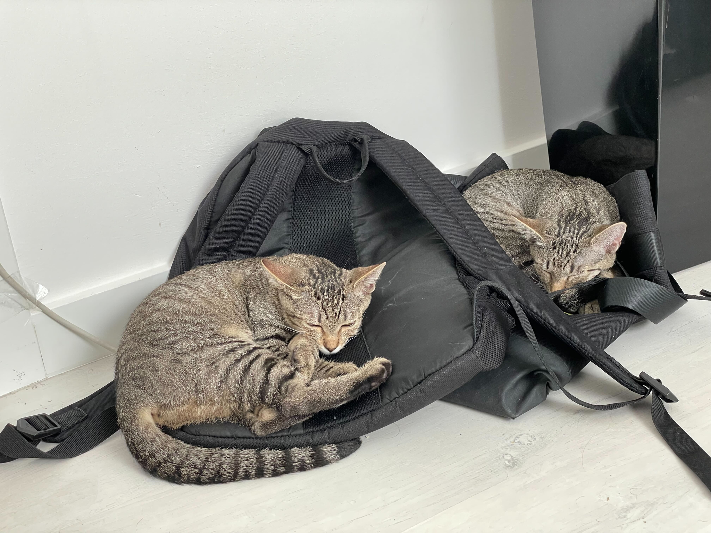

Moje koty
Dzień dobry,
Jestem Patka, mieszkam we Wrocławiu i mam koty. Mieszkają ze mną dwa koty: Lara i Drama.
Pozostałe trzy koty mieszkają z moimi rodzicami i siostrą w Namysłowie, skąd pochodze. Nazywają się one: Shira, Miszka i Beza.

Lara i Drama śpiące na plecaku

Shira, Miszka i Beza proszące o smaczki